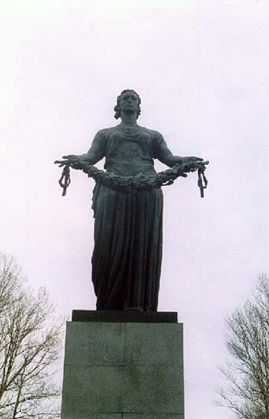

Оглавление
Би́тва за Ленинград— стратегическое сражение во время Великой Отечественной войны, с 10 июля 1941 по 9 августа 1944 года, развернувшееся в северо-западных районах России на подступах к Ленинграду. В ходе сражения советским войскам удалось удержать в своих руках Ленинград (несмотря на его блокаду), сковать под городом крупную группировку войск противника, не дав соединиться немецким и финским войскам, сохранить Балтийский флот.
Наступление немецких войск на Ленинград началось 10 июля 1941 года с рубежа реки Великой. К этому времени на дальних юго-западных и северо-западных подступах к Ленинграду немецкое и финское командование имело 38 дивизий (32 пехотные, 3 танковые, 3 моторизованные), 1 кавалерийскую и 2 пехотные бригады. Им противостояли войска Северного фронта (командующий генерал-лейтенант М.М. Попов) в составе 7-й и 23-й армий (всего 8 дивизий) и Северо-Западный фронт (командующий генерал-майор П.П. Собенников) в составе 8-й, 11-й, 27-й армий (31 дивизия и 2 бригады), оборонявшихся на фронте длиною 455 км; в 22 дивизиях потери в личном составе и материальной части составляли свыше 50%.
Для усиления обороны юго-западных подступов к Ленинграду командование Северного фронта 6 июля образовало Лужскую оперативную группу, из состава которой к началу боевых действий прибыли 2 стрелковые дивизии, 1 дивизия народного ополчения, личный состав двух ленинградских военных училищ, отдельная горнострелковая бригада, особая артиллерийская группа. К 10 июля войска группы армий «Север» (генерал-фельдмаршал В. Лееб), имели превосходство над войсками Северо-Западного фронта: по пехоте — в 2,4; орудиям — в 4; минометам — в 5,8; танкам — в 1,2; самолетам — в 9,8 раза.
Для координации действий фронтов 10 июля 1941 года Государственный комитет обороны (ГКО) образовал Северо-Западное направление во главе с К.Е. Ворошиловым (член Военного совета секретарь ЦК ВКП (б) А.А. Жданов, начальник штаба генерал-майор М.В. Захаров), подчинив ему войска Северного и Северо-Западного фронтов, Северный флот, Балтийский флот. Вокруг Ленинграда создавалась система обороны, состоявшая из нескольких поясов. На ближних подступах к Ленинграду в юго-западном и южном направлениях строились Красногвардейский и Слуцко-Колпинский укрепленные районы, к северу от города совершенствовался Карельский укрепленный район. Возводился также пояс оборонительных сооружений по линии Петергоф (Петродворец), Пулково; создавались оборонительные сооружения и внутри Ленинграда. Помощь войскам в строительстве рубежей обороны оказывало гражданское население. В короткий срок были сформированы 10 дивизий народного ополчения и десятки партизанских отрядов. Из города были эвакуированы дети, часть заводского и фабричного оборудования, культурных ценностей. Оставшаяся в городе промышленность перестроилась на производство и ремонт вооружения.
Преодолев сопротивление советских войск в Прибалтике, враг вторгся в пределы Ленинградской области. Немецкие войска 5 июля овладели городом Остров, а 9 — Псковом. 10 июля 1941 года развернулось наступление противника на юго-западных и северных подступах к Ленинграду. Почти одновременно враг нанес удары на лужском, новгородском и старорусском направлениях, в Эстонии, на петрозаводском и олонецком направлениях. В последней декаде июля противник вышел на рубеж рек Нарва, Луга, Мшага, где вынужден был перейти к обороне и произвести перегруппировку. На Карельском перешейке с 31 июля советские войска вели оборонительные бои с наступающими финскими войсками и к 1 сентября остановили их на рубеже государственной границы 1939 года. На олонецком, петрозаводском и свирском направлениях наземные войска при поддержке Ладожской военной флотилии (командующий с августа капитан первого ранга, с сентября контр-адмирал Б.В. Хорошхин, с октября 1941 — капитан первого ранга В.С. Чероков), ведя с 10 июля упорные бои, к концу сентября остановили противника на рубеже реки Свирь.
В августе развернулись бои на ближних подступах к Ленинграду. С 8 августа противник перешел в наступление на красногвардейском направлении. 16 августа был оставлен Кингисепп, к 21 августа противник вышел к Красногвардейскому укрепленному району, пытаясь обойти его с юго-востока и ворваться в Ленинград, но его атаки были отражены. С 22 августа по 7 сентября велись бои на ораниенбаумском направлении. Враг был остановлен северо-восточнее Копорья. Боевые действия наземных войск развивались во взаимодействии с Балтийским флотом (командующий вице-адмирал В.Ф. Трибуц) и Ладожской военной флотилией. Кроме поддержки сухопутных войск авиацией и артиллерией, флот решал самостоятельные задачи: защищал подступы к Ленинграду, нарушал коммуникации противника в Балтийском море, вел борьбу за Моонзундский архипелаг, главную базу флота — Таллин и за полуостров Ханко. В период обороны Ленинграда флот направил на сушу (в бригады морской пехоты, отдельные стрелковые батальоны) свыше 160 тысяч человек личного состава.
На новгородско-чудовском направлении советские войска пытались контратаковать противника, но успеха не добились. 19 августа враг овладел Новгородом, а 20 августа советские войска оставили Чудово. За счет освободившихся войск немецкое командование усилило группировку, наступавшую на Ленинград, и перенесло сюда основные усилия авиации группы армий «Север». Создалась опасность окружения Ленинграда. 23 августа Ставка разделила Северный фронт на Карельский фронт (командующий генерал-лейтенант В.А. Фролов) и Ленинградский фронт (командующий генерал-лейтенант М.М. Попов, с 5 сентября К.Е. Ворошилов, с 12 сентября Г.К. Жуков, с 10 октября генерал-майор И.И. Федюнинский, с 26 октября генерал-лейтенант М.С. Хозин). 29 августа ГКО объединил Главное командование Северо-Западного направления с командованием Ленинградского фронта, а Северо-Западный фронт подчинил непосредственно Ставке Верховного главнокомандования. Враг начал наступление вдоль шоссе Москва-Ленинград и 25 августа захватил Любань, 29 августа Тосно, 30 августа вышел на реку Неву и перерезал железные дороги, связывающие Ленинград со страной. С 30 августа по 9 сентября велись бои в районе Красногвардейска. Прорвавшись 8 сентября через станцию Мгу на Шлиссельбург, немецкие войска отрезали Ленинград от суши. Началась блокада города. Сообщение поддерживалось только по Ладожскому озеру и по воздуху. Подвоз всего необходимого войскам, населению и промышленности резко сократился. С 4 сентября 1941 года противник начал артиллерийский обстрел города и систематические налеты авиации.
В сентябре-ноябре 1941 года на город было сброшено 65 тысяч зажигательных и 3 тысячи фугасных авиабомб, в сентябре-декабре 1941 года было выпущено 30 тысяч артиллерийских снарядов. Но враг не сломил боевой дух защитников города. Во второй половине ноября была проложена автомобильная дорога по льду Ладожского озера, по которой подвозились боеприпасы, вооружение, продовольствие, медикаменты, топливо, а из Ленинграда эвакуировались больные, раненые, нетрудоспособные. В ноябре 1941 — апреле 1942 года было эвакуировано 550 тысяч человек. С началом работы Ладожской трассы хлебный паек в городе стал постепенно увеличиваться.
Попытки деблокады Ленинграда в 1942 году сорвались из-за недостатка сил и средств, недочетов в организации наступления. Успешное контрнаступление советских войск зимой 1942-1943 года под Сталинградом оттянуло часть вражеских сил из района Ленинграда и создало благоприятную обстановку для его деблокады. 12-30 января 1943 года войска 67-й армии Ленинградского фронта (командующий Л.А. Говоров), 2-й ударной и части сил 8-й армий Волховского фронта (создан 17 декабря 1941, командующий К.А. Мерецков) при поддержке авиации дальнего действия, артиллерии и авиации Балтийского флота встречными ударами в узком выступе между Шлиссельбургом и Синявином (южнее Ладожского озера) разорвали кольцо блокады и восстановили сухопутную связь Ленинграда со страной. Через образовавшийся коридор (шириной 8-10 км) в течение 17 суток были проложены железная дорога и автомобильная трасса, но полностью проблема снабжения города еще не была решена: станция Мга на железнодорожной линии Ленинград—Волхов оставалась в руках врага, дороги в освобожденной полосе находились под постоянным обстрелом вражеской артиллерии. Попытки расширить сухопутные коммуникации (наступление в феврале-марте 1943 года на Мгу и Синявино) не достигли цели. В июле-августе 1943 года на Мгинском выступе советские войска вели бои с силами 18-й немецкой армии и не допустили переброски войск противника на другие фронты.
Лишь в начале 1944 года наступательная операция советских войск под Ленинградом и Новгородом завершилась снятием блокады Ленинграда. В июне-августе 1944 в ходе Выборгской и Свирско-Петрозаводской операции были разбиты финские войска и снята угроза Ленинграду с севера. Советские войска в битве за Ленинград оттянули на себя до 15-20% вражеских сил на Восточном фронте и всю финскую армию, разгромили до 50 немецких дивизий. Воины и жители города показали образцы героизма и самоотверженной преданности Родине.
Сотни тысяч воинов удостоились правительственных наград, сотни получили звание Героя Советского Союза, из них пятеро дважды: А.Е. Мазуренко, П.А. Покрышев, В.И. Раков, Н.Г. Степанян, Н.В. Челноков. 22 декабря 1942 года была учреждена медаль «За оборону Ленинграда»; 26 января 1945 года Ленинград был награжден орденом Ленина, а 8 мая 1965 года в ознаменование 20-летия победы в Великой Отечественной войне Ленинграду было присвоено почетное звание город-герой.
